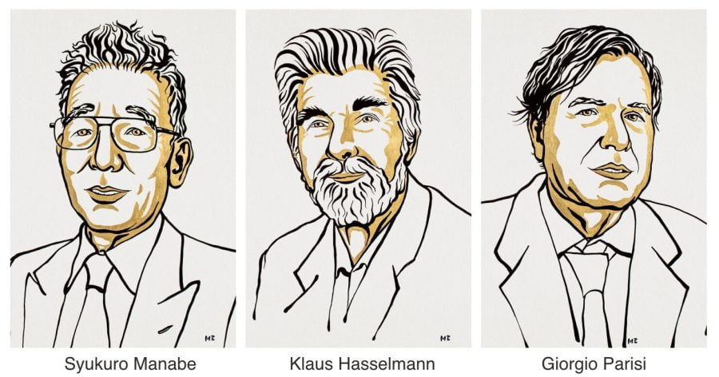

၂၀၂၁ ခုနှစ်အတွက် ရူပဗေဒ နိုဘယ်ဆု ရရှိသူများ စာရင်းကို ဆုရွေးချယ်ရေး ကော်မတီက ဒီနေ့ ကြေငြာလိုက်ပါတယ်။
ဒီနှစ် အတွက် ရူပဗေဒ နိုဘယ်ဆုကို ရူပဗေဒ ပညာရှင် ၃ ယောက်က ရရှိသွားပါတယ်။ ထူးခြားတာကတော့ ဒီနှစ်အတွက် နိုဘယ်ဆု ရရှိသွားသူတွေဟာ ကမ္ဘာကြီးပူနွေးလာမှုနဲ့ ကမ္ဘာ့ရာသီဥတု ပြောင်းလဲမှုတွေနဲ့ ပါတ်သက်လို့ အရေးပါတဲ့ သုတေသနတွေ ပြုလုပ်ခဲ့ကြသူတွေ ဖြစ်တာပါပဲ။
အခုနှစ်အတွက် ရူပဗေဒ နိုဘယ်ဆုကို ကမ္ဘာကြီးပူနွေးလာမှုနဲ့ ပါတ်သက်ပြီး သုတေသန ပြုခဲ့သူတွေကို ချီးမြှင့်တာနဲ့ ပါတ်သက်လို့ ကုလသမဂ္ဂ မိုးလေဝေသ အေဂျင်စီက နေပြီး နိုဘယ်ဆုချီးမြှင့်ရေး ကော်မတီကို ချီးကျူးစကား ပြောကြားခဲ့ပါတယ်။ ဒါဟာ လူသားတွေကြောင့် ကမ္ဘာကြီး ပူနွေးလာတာနဲ့ ပါတ်သက်လို့ ကမ္ဘာ့ပညာရှင်တွေ၊ အစိုးရတွေကြားမှာ တူညီတဲ့ သဘောထား ရပ်တည်ချက် တခု ဖြစ်ပေါ်လာနေတဲ့ လက္ခဏာပဲလို့ ပြောကြားလိုက်ပါတယ်။
အခုနှစ်အတွက် နိုဘယ်ဆုရဲ့ တစ်ဝက်ကို အမေရိကန် ပြည်ထောင်စုမှာ နေထိုင်တဲ့ ဂျပန်လူမျိုး သုတေသီ ဆူကူရို မာနာဘီ (Syukuro Manabe) နဲ့ ဂျာမနီက ကလော့စ် ဟက်စယ်မန်း (Klaus Hasselmann) တို့က ခွဲယူရမှာ ဖြစ်ပြီး ကျန်တစ်ဝက်ကိုတော့ အီတလီ သုတေသီ ဂျော်ဂျီယို ပါရီစီ က ရရှိမှာ ဖြစ်ပါတယ်။
မာနာဘီနဲ့ ဟက်စယ်မန်း တို့နှစ်ဦးဟာ ကမ္ဘာ့ ရာသီဥတုတွေ ဖြစ်ပေါ်ပုံကို တွက်ချက်ခန့်မှန်းနိုင်မယ့် သင်္ချာနည်းတွေကို ထုတ်ဖေါ်ခဲ့တာဖြစ်ပြီး သူတို့ရဲ့ သင်္ချာနည်ကို အသုံးပြုပြီး ကမ္ဘာကြီး ပူနွေးလာတာကို တိတိကျကျ ကြိုတင်ဟောကိန်းထုတ်နိုင်ခဲ့ကြပါတယ်။
ပါရီစီ ကတော့ ၁၉၈၀ ပြည့်နှစ်တွေမှာ အရည်တွေနဲ့ အငွေ့တွေရဲ့ ပရမ်းပတာ လှုပ်ရှားနေမှုတွေရဲ့ နောက်ကွယ်က “လှို့ဝှက်နိယာမ” ကို ရှာဖွေဖေါ်ထုတ်နိုင်ခဲ့ပါတယ်။ ဒီ နိယာမကို အငွေ့နဲ့ အရည်တွေရဲ့ လှုပ်ရှားမှုကို တွက်ချက်ရာမှာတင်မကပဲ အာရုံကြော သုတေသနတွေ၊ ဉာဏ်ရည်တုတွေနဲ့ ငှက်တွေရဲ့ ပျံသန်းမှုတွေကို ခန့်မှန်းရာမှာလဲ အသုံးချလို့ ရပါတယ်။
“မာနာဘီနဲ့ ဟက်စယ်မန်းတို့ နှစ်ဦးဟာ ကမ္ဘာကြီးရဲ့ ရာသီဥတုအပေါ် လူသားတွေက ဘယ်လို အကျိုးသက်ရောက်မှု ရှိနေလဲ ဆိုတာနဲ့ ပါတ်သက်တဲ့ အသိအမြင်နဲ့ ပါတ်သက်တဲ့ အခြေခံ အုတ်မြစ်တွေကို ချပေးခဲ့ပါတယ်။” လို့ နိုဘယ်ဆုရွေးချယ်ရေး ကော်မတီရဲ့ ကြေငြာချက်မှာ ဖော်ပြထားပါတယ်။
“ပါရီစီကတော့ ပရမ်းပတာ ဖြစ်နေတယ်လို့ ထင်ရတဲ့ လှုပ်ရှားမှုတွေရဲ့ နောက်ကွယ်က နိယာမကို ရှာဖွေတွေ့ရှိခဲ့တဲ့အတွက် နိုဘယ်ဆု ချီးမြှင့်ရခြင်း ဖြစ်တယ်” လို့ ဒီကြေငြာချက်မှာ ဆက်လက်ဖော်ပြထားပါတယ်။
ဂျာမနီနိုင်ငံ မက်စ်ပလန့် သုတေသနဌာနမှာ တာဝန်ထမ်းဆောင်နေတဲ့ ဟက်ဆယ်မန်းက “ကျွန်တော်က အနားယူနေပါပြီ။ ဒီတော့လဲ နဲနဲတော့ အပျင်းထူ လာတာပေါ့ဗျာ။ ဒီဆုချီးမြှင့်ခံရတဲ့အတွက် ပျော်ပါတယ်။ သုတေသနတွေလဲ ဆက်လုပ်သွားမှာပါ” လို့ သတင်းထောက်တွေကို ပြောကြားခဲ့ပါတယ်။
ဂျပန်လူမျိုး မာနာဘီဟာ ဂျပန်နိုင်ငံကနေ အမေရိကန် ပြည်ထောင်စုကို ပြောင်းရွှေ့အခြေချလာသူ ဖြစ်ပါတယ်။ သူဟာ ပရင်စတန် တက္ကသိုလ်မှာ တာဝန်ထမ်းဆောင်နေပြီး ကမ္ဘာ့ရာသီ ဥတုနဲ့ ပါတ်သက်တဲ့ သုတေသီ တစ်ဦးဖြစ်ပါတယ်။
သတင်းထောက်တွေရဲ့ မေးမြန်းမှုကို ဖြေကြားရာမှာ သူက “ဒီဆုချီးမြှင့်မှုဟာ ပညာရှင် လောကက ကမ္ဘာ့ရာသီဥတု ပြောင်းလဲမှု ကို အသိအမှတ် ပြုခြင်းပဲလို့ ယူဆပါတယ်။ ဒီ ရာသီဥတု ပြောင်းလဲမှုဟာ ရှေ့ရှောက် ပိုပြီးပဲ ဆိုးလာစရာ ရှိပါတယ်” လို့ ဖြေကြားခဲ့ပါတယ်။
“အခုကို ကမ္ဘာ့ ရာသီဥတု ပြောင်းလဲမှုရဲ့ သက်သေ အထောက်အထားတွေ တွေ့နေရပါပြီ။ ဒါ့ကြောင့်လဲ ဒီနှစ် ဆုက ဒီ Climat Change ကို ဆုချီးမြှင့်တာ လို့ မြင်ပါတယ်” လို့ ဂျပန်ဘာသာနဲ့ ဆက်ပြောပါတယ်။
ဒီ ကမ္ဘာရာသီဥတု ပြောင်းလဲမှုကို ဘယ်လိုဖြေရှင်းမလဲလို့ ဆက်မေးရာမှာတော့ သူက ပြုံးပြီး “ဒီကိစ္စက ရာသီဥတု ပြောင်းလဲမှုကို နားလည်ဖို့ထက် အဆ တစ်သန်းလောက် ပိုခက်ပါတယ်။ ကျွန်တော့်အတွက်တော့ လှို့ဝှက်ဆန်းကျယ်တဲ့ ကိစ္စတစ်ခုပါပဲ” လို့ ဖြေကြားသွားပါတယ်။
ဟက်ဆယ်မန်းဟာ မာနာဘီရဲ့ သုတေသနတွေ ထွက်လာအပြီး နောက် ၁၀ နှစ်လောက် အကြာမှာ လူတွေက ထုတ်လုပ်တဲ့ ကာဗွန်ဒိုင်အောက်ဆိုဒ်တွေကြောင့် ကမ္ဘာကြီး ပူနွေးလာတယ် ဆိုတာကို သင်္ချာမော်ဒယ် ပြုလုပ်ပြီး ပြသနိုင်ခဲ့ပါတယ်။
ပါရီစီ ကို သတင်းထောက်တွေက ဘာပြောချင်ပါသလဲလို့ မေးမြန်းရာမှာတော့ “အခုအချိန်မှာ ကမ္ဘာ့ရာသီဥတု ပြောင်းလဲတာကို တွန်းလှန်ဖို့ ဆုံးဖြတ်ချက်တွေ ပြတ်ပြတ်သားသားချဖို့နဲ့ မြန်မြန်သွက်သွက် ပြတ်ပြတ်သားသား လုပ်ဖို့ အရေးတကြီး လိုအပ်နေပါပြီ” လို့ ပြောကြားသွားပါတယ်။
“အဓိကကတော့ လူတွေက လာမယ့် နှစ်အနည်းငယ် အတွင်း ဖြစ်လာတော့မယ့် ကိစ္စအတွက် အခုကစပြီး လုပ်ဆောင်ရမယ် ဆိုတာကို လက်မခံနိုင် ကြတာပဲ ဖြစ်ပါတယ်” လို့ သူက နိဂုံးချုပ် ပြောကြားသွားပါတယ်။
၂၀၂၁ အတွက် ရူပဗေဒ နိုဘယ်ဆု ကမ္ဘာကြီး ပူနွေးလာမှုသုတေသနပြုခဲ့တဲ့ ပညာရှင်များရရှိ

October 6, 2021
Other Posts
- အာကာသဟာ ဘယ်လောက် မှောင်သလဲ
- အပြည်ပြည် ဆိုင်ရာ အာကာသ စခန်းက ရုရှားထွက်မယ်ဆို SpaceX ကကူမယ်
- မြန်မာပြည်မှာ ရှာတွေ့ ခဲ့တဲ့ နှစ် ၉၉ သန်းကျော်က ဒိုင်နိုဆောသွေး စုပ်ထားတဲ့ လှေး
- အာကာသ လေပြင်းက ကြယ်သစ်မွေးဖွားမှုကို ရပ်တန့်စေနိုင်
- Nibiru ဂြိုဟ် တကယ် ရှိသလား
- ရှည်မျောမျောနဲ့ ထူးထူးဆန်းဆန်း ဂြိုဟ် ရှာဖွေတွေ့ရှိ
- သင့်ကလေး စာဖတ်ချင်စိတ် ဖြစ်လာအောင် ဘယ်လိုပြုစုပျိုးထောင် ပေးမလဲ
- သက်ရှိတွေ ရှိနေနိုင်တဲ့ Hycean ဂြိုလ်
- စတီဗင် ဟော့ကင်းရဲ့ Black Hole သီအိုရီ နှစ် ၅၀ အကြာမှာ သက်သေပြနိုင်ပြီ
- ဆိုက်ကလုန် မုန်တိုင်းတွေ ဘယ်လို ဖြစ်လာသလဲ